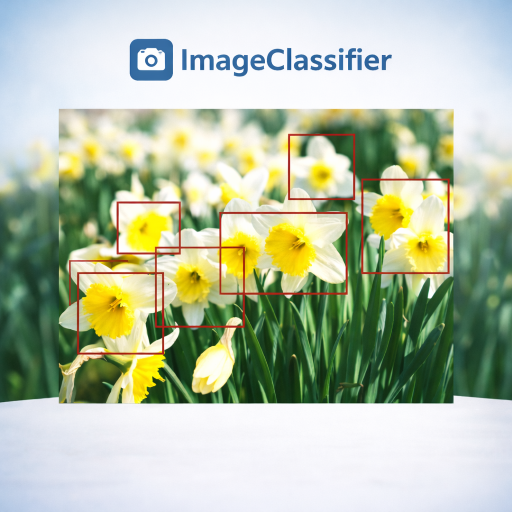
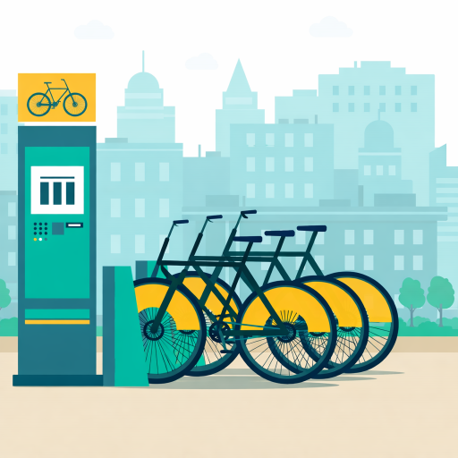

A deep learning project focused on image classification and model evaluation.

Built a convolutional neural network (CNN) to classify flower species with high accuracy.
This project covers the full machine learning pipeline — data preprocessing, model training, hyperparameter tuning, and evaluation using performance metrics.
Selected work exploring machine learning, data systems, and applied analytics.
Built classification models to identify high-potential donors using structured data and feature engineering.
View ProjectAnalysed smart device usage data to extract behavioural insights and support decision-making.
View Project
Explored user behaviour trends to support data-driven marketing strategies.
View Project